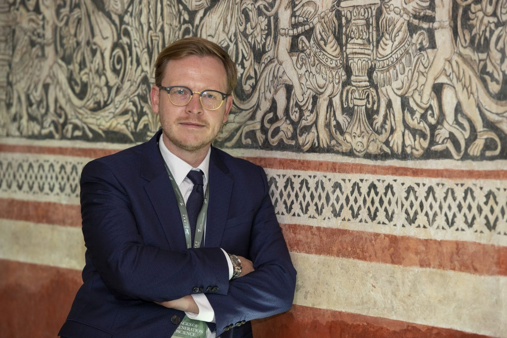
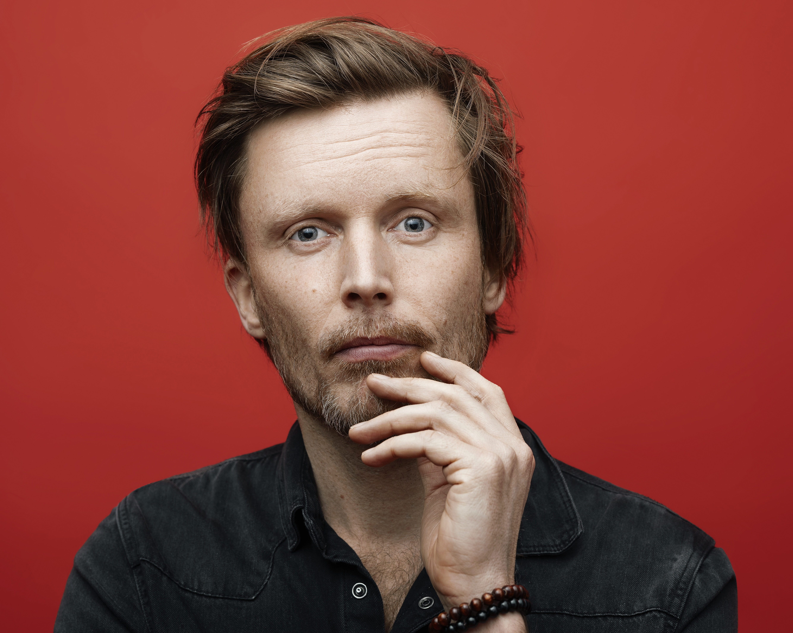
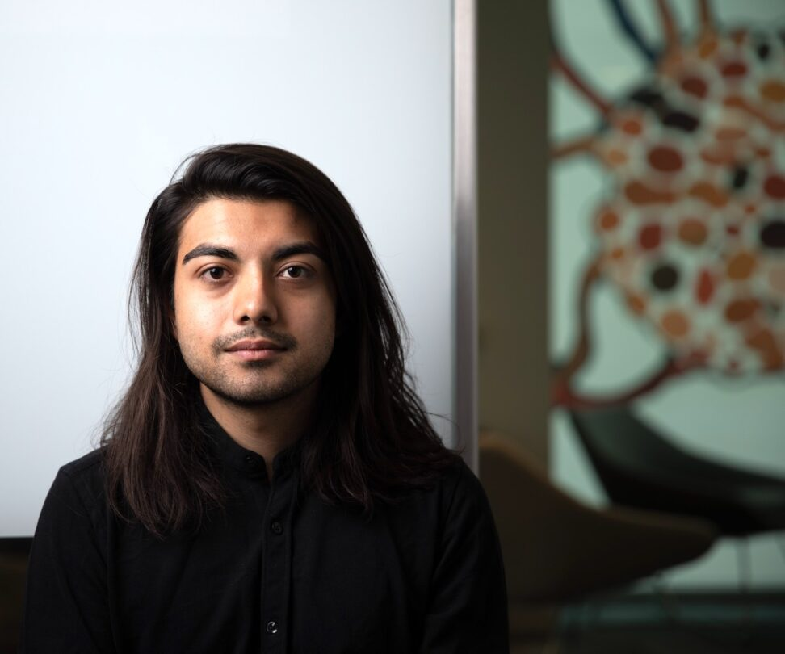

the day is almost planned out.
Check the Schedule tab for more information!
Human Identity, Authenticity, and Agency in the Age of AI
AI and the Self brings together technical, empirical, social, cultural, and philosophical work on how AI systems mediate identity, agency, self-understanding, dependence, and human flourishing.
Check the Schedule tab for more information!
Accepted Papers are now visible on our OpenReview. Visit the NeurIPS event page for links.
AI systems are no longer only external tools. They are increasingly becoming interlocutors, cognitive extensions, mirrors, collaborators, and social actors that shape how people think, decide, remember, and understand themselves.
This workshop asks how AI systems construct, extend, support, or destabilize the self, and what kinds of computational, empirical, and interdisciplinary methods are needed to study those effects rigorously.

University of Bonn
Professor at the University of Bonn and director of the Center for Science and Thought, working on philosophy of mind, selfhood, agency, and ethical questions around AI.

University of Copenhagen
Professor of NLP and machine learning at the University of Copenhagen, working across language models, fairness, language and culture, and philosophical questions about AI.
Georgia Tech
Munmun De Choudhury is a professor at the School of Interactive Computing, Georgia Tech. Munmun’s research interests are in computational social science, with a focus on reasoning about personal and societal well-being from social digital footprints.

Microsoft Research · University of Cambridge
Researcher at Microsoft and affiliated lecturer at Cambridge, studying human–AI interaction and how generative AI affects cognition, critical thinking, and knowledge work.
Max Planck Institute for Software Systems
Tenure-track faculty at the Max Planck Institute for Software Systems, leading the BrAIN group at the intersection of machine learning, language, and neuroscience.